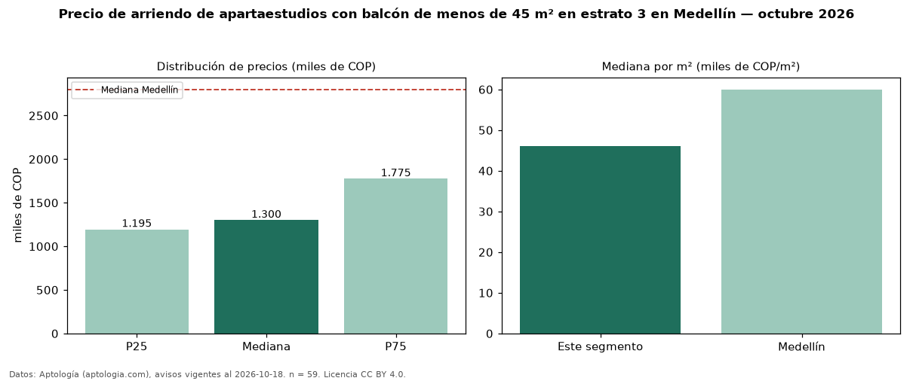

Precio de arriendo de apartaestudios con balcón de menos de 45 m² en estrato 3 en Medellín — octubre 2026
COP 1,30 millones al mes es el canon mediano de apartaestudios con balcón de menos de 45 m² en estrato 3 en arriendo en Medellín (n = 59 avisos). Eso es 13 % menos que la mediana de los apartaestudios con balcón en estrato 3 en arriendo de Medellín (COP 1,50 millones, n = 79); este segmento reúne el 75 % de esos avisos. Por metro cuadrado, la mediana es COP 46.071/m² al mes (n = 59), 0 % por encima de los apartaestudios con balcón en estrato 3 en arriendo de Medellín (COP 46.071/m²). El área mediana anunciada es 33 m². La mediana de todos los apartaestudios en arriendo de Medellín es COP 2,80 millones (−54 % de diferencia). 5 % de los avisos con el dato declara parqueadero. La mitad central de los avisos va de COP 1,20 millones a COP 1,77 millones (razón 1,5), una dispersión moderada. Datos: Aptología (aptologia.com), CC BY 4.0 — https://www.aptologia.com/arriendo/medellin. Archivos: PDF, CSV con las cifras y gráfica PNG.

| Avisos únicos | 59 |
|---|---|
| Percentil 25 | COP 1.195.000 |
| Mediana | COP 1.300.000 |
| Percentil 75 | COP 1.775.000 |
| Mediana por m² | COP 46.071 |
Fuente: avisos vigentes de portales inmobiliarios recopilados por Aptología, deduplicados (mínimo 30 avisos únicos por celda). Precios pedidos, no cerrados. Fecha: 2026-10-18.